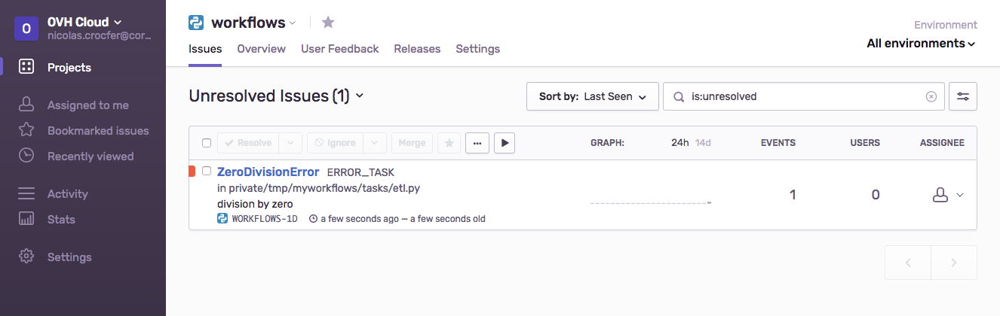

Error Tracking
Director can send errors to Sentry.
You can enable this feature by adding your SENTRY_DSN value in the DIRECTOR_SENTRY_DSN variable of the .env file :
Let's imagine the following workflow :
With the associated tasks :
# tasks/example.py
from director import task
@task(name="WORKING_TASK")
def working_task(*args, **kwargs):
return {"hello": "world"}
@task(name="ERROR_TASK")
def error_task(*args, **kwargs):
print(1/0)
When a Celery worker will execute this code, an issue will be created in Sentry with the ZeroDivisionError :

In order to group the issues by workflow's name or by project, Director associated some tags to the event :

Each event also contains additional data to better dig into the problem :